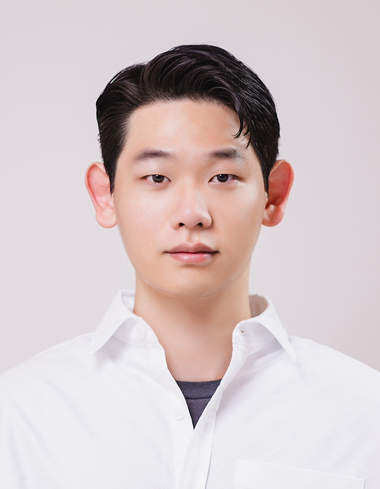

Sangjun Noh
I'm a Ph.D. candidate in the Gwangju Institute of Science and Technology (GIST) ,
working in the GIST AILab
under the supervision of Prof. Kyoobin Lee .
During my Ph.D., I have been primarily focused on generating large-scale datasets in physical simulators
to advance robotic perception (e.g., unseen object understanding) and manipulation (e.g., grasping and placing).
Recently, my research has expanded toward adapting Vision Foundation Models (VFMs) for robotics,
learning policies , and exploring Vision-Language-Action (VLA) frameworks.
Ultimately, my goal is to enable robots to perform human-like manipulation in the real world.
I genuinely enjoy discussing ideas and collaborating on exciting research.
If you're interested in robotic perception, policy learning, or VLA,
please feel free to reach out !! I’d love to connect! 😊
Email /
CV /
Scholar /
Github
🇰🇷 South Korea

Updates
[Jun '25] Our work GraspClutter6D was accepted to IEEE RA-L 2025 !!
[May '25] Our work GraspSAM was accepted to ICRA 2025 !!
[May '24] Our work DPLOT was accepted to CVPR 2024 !!
[Mar '24] Our work UOP was accepted to IEEE RA-L 2024 !!
[Sep '22] Started the Ph.D. Course at GIST AILab.
[Jul '22] Successfully defended M.S. thesis at GIST.
[May '22] Our work UOAIS was accepted to ICRA 2022 !!
[Sep '20] Started the M.S. program in Robotics & AI at GIST AI Lab.
[Jan '20] Joined GIST AI Laboratory as a research intern.
[Aug '19] Graduated from Dankook University (B.S. in Electronic Engineering).
모든 publication은 Google Scholar를 참고해주세요: Google Scholar
3D Flow Diffusion Policy
arXiv, 2025
paper /
Visuomotor policy learning via generating flow in 3D space.
ManipForce: Force-Guided Policy Learning with Frequency-Aware Representation for Contact-Rich Manipulation
arXiv, 2025
paper
BiGraspFormer: End-to-End Bimanual Grasp Transformer
arXiv, 2025
paper
GraspClutter6D: A Large-Scale Dataset for Robotic Grasping and Perception in Clutter
Seunghyeok Back, Joosoon Lee, Kangmin Kim, Heeseon Rho, Geonhyup Lee, Raeyoung Kang, Sangbeom Lee,
Sangjun Noh , Youngjun Lee, Taeyeop Lee, and Kyoobin Lee
IEEE Robotics and Automation Letters (RA-L)
paper /
website /
code
Benchmarking grasping & perception in cluttered scenes.
GraspSAM: When Segment Anything Model meets Grasp Detection
Sangjun Noh , Jongwon Kim, Dongwoo Nam, Seunghyeok Back, Raeyoung Kang, and Kyoobin Lee
IEEE International Conference on Robotics and Automation (ICRA) , 2025 — Poster
paper /
website /
code /
video
Segment Anything + grasping for scalable label-free grasp proposal generation.
Domain-Specific Block Selection and Paired-View Pseudo-Labeling for Online Test-Time Adaptation
Yeonguk Yu, Sungho Shin, Seunghyeok Back, Minhwan Ko,
Sangjun Noh , and Kyoobin Lee
CVPR , 2024 — Poster
paper /
code
Online TTA with block selection + paired-view pseudo labels.
Learning to Place Unseen Objects Stably Using a Large-Scale Simulation
Sangjun Noh* , Raeyoung Kang*, Taewon Kim*, Seunghyeok Back, Seongho Bak, and Kyoobin Lee
IEEE Robotics and Automation Letters (RA-L) — Gold Prize, 29th Samsung Humantech Paper Award
paper /
website /
code
Stable placement policy learning at scale via simulation.
PolyFit: A Peg-in-hole Assembly Framework for Unseen Polygon Shapes via Sim-to-real Adaptation
Geonhyup Lee*, Joosoon Lee*,
Sangjun Noh , Minhwan Ko, Kangmin Kim, and Kyoobin Lee
IROS , 2024
paper
Sim2Real peg-in-hole for unseen polygonal shapes.
Unseen Object Amodal Instance Segmentation via Hierarchical Occlusion Modeling
Seunghyeok Back, Joosoon Lee, Taewon Kim,
Sangjun Noh , Raeyoung Kang, Seongho Bak, and Kyoobin Lee
ICRA , 2022
paper /
website /
code /
video
Amodal instance segmentation with explicit occlusion reasoning.